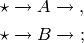
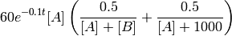
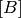
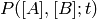
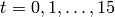

burr08 : two competing clonotypes¶
Overview¶
This model defines a system of reactions

where the initial copy counts of the species  and
and  are
both zero. The reaction propensities used for the two ‘birth’ reactions
and are
non-standard. The propensity for the former reaction is time-dependent,
and is defined as
are
both zero. The reaction propensities used for the two ‘birth’ reactions
and are
non-standard. The propensity for the former reaction is time-dependent,
and is defined as

while the propensity for the latter reaction is the same, with the species
counts and  swapped. The two ‘death’ reactions
are elementary and occur with rate coefficients of  .
.
Running the model¶
This model is defined by the module cmepy.model.burr08. The source code for this model is listed below.
To see this model in action, fire up the Python interpreter, and enter:
>>> from cmepy.models import burr08
>>> burr08.main()
This will produce a sequence of plots of the probability distributions  for . Some of these plots are show below.


Source code¶
"""
a model of T cell homeostasis for two competing clonotypes
This model definition is based on S. Macnamara and K. Burrage's formulation of
Stirk et al's model:
E. R. Stirk, C. Molina-Par and H. A. van den Berg.
Stochastic niche structure and diversity maintenance in the T cell
repertoire. Journal of Theoretical Biology, 255:237-249, 2008.
"""
import math
import numpy
from cmepy import model
def create_model():
"""
create species count state space version of the competing clonotypes model
"""
shape = (50, 50)
# we first define the mappings from the state space to species counts
# this is pretty easy since we choose species count state space
species_count_a = lambda *x : x[0]
species_count_b = lambda *x : x[1]
# we now define the reaction propensities using the species counts
def reaction_a_birth(*x):
"""
propensity of birth reaction for species a
"""
s_a = species_count_a(*x)
s_b = species_count_b(*x)
return numpy.where(s_a + s_b > 0,
60.0*s_a*(numpy.divide(0.5, s_a + s_b) +
numpy.divide(0.5, (s_a + 10*100))),
0.0)
def reaction_a_decay(*x):
return 1.0*species_count_a(*x)
def reaction_b_birth(*x):
"""
propensity of birth reaction for species b
"""
s_a = species_count_a(*x)
s_b = species_count_b(*x)
return numpy.where(s_a + s_b > 0,
60.0*s_b*(numpy.divide(0.5, s_a + s_b) +
numpy.divide(0.5, (s_b + 10*100))),
0.0)
def reaction_b_decay(*x):
return 1.0*species_count_b(*x)
return model.create(
name = 'T Cell clonoTypes',
reactions = (
'*->A',
'A->*',
'*->B',
'B->*',
),
propensities = (
reaction_a_birth,
reaction_a_decay,
reaction_b_birth,
reaction_b_decay,
),
transitions = (
(1, 0),
(-1, 0),
(0, 1),
(0, -1),
),
species = (
'A',
'B',
),
species_counts = (
species_count_a,
species_count_b,
),
shape = shape,
initial_state = (10, 10)
)
def create_time_dependencies():
"""
create time dependencies for the competing clonotypes model
"""
# 0-th and 2-nd reactions are scaled by the following
# time dependent factor
return {frozenset([0, 2]) : lambda t : math.exp(-0.1*t)}
def main():
"""
Solves the competing clonotypes model and plots results
"""
import pylab
from cmepy import solver, recorder
m = create_model()
s = solver.create(
model = m,
sink = True,
time_dependencies = create_time_dependencies()
)
r = recorder.create(
(m.species, m.species_counts)
)
t_final = 15.0
steps_per_time = 1
time_steps = numpy.linspace(0.0, t_final, int(steps_per_time*t_final) + 1)
for t in time_steps:
s.step(t)
p, p_sink = s.y
print 't : %.2f, truncation error : %.2g' % (t, p_sink)
r.write(t, p)
# display a series of contour plots of P(A, B; t) for varying t
measurement = r[('A', 'B')]
epsilon = 1.0e-5
for t, marginal in zip(measurement.times, measurement.distributions):
pylab.figure()
pylab.contourf(
marginal.compress(epsilon).to_dense(m.shape)
)
pylab.title('P(A, B; t = %.f)' % t)
pylab.ylabel('species A count')
pylab.xlabel('species B count')
pylab.show()